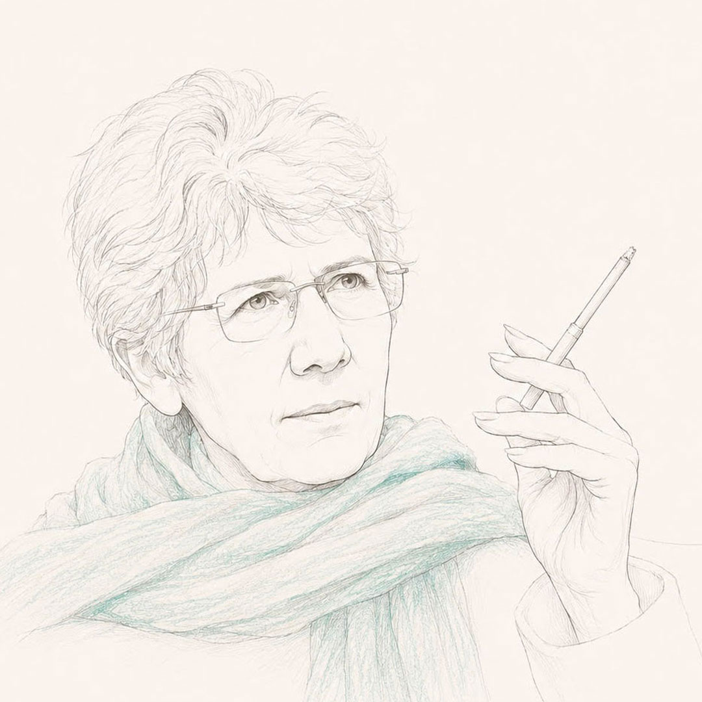

ویدا حاجبی (۱۳۱۴–۱۳۹۵) نویسنده و فعال سیاسی ایرانی است که با نگاهی مستقل و انتقادی، تجربههای خود از مبارزه و زندان را در آثارش روایت کرده است. او از همان ابتدا روحیهای سرکش و پرسشگر داشت؛ در قالبها نمیگنجید و بهسادگی تن به چارچوبهای از پیش تعیینشده نمیداد. بهعنوان زن، نه در نقشِ ایثارگرِ کلاسیک تعریف شد و نه در چهارچوبهای از پیشساخته آرام گرفت. در عین حال، در دل این سرکشی به ظرافتهای زندگی نیز وفادار ماند. این روحیهی نقد و جستوجو، و پایبندیاش به شناخت تاریخ، در آثارش جلوهای روشن پیدا کرد. بهویژه در داد بیداد، که به پلی برای صداهای گوناگونِ زنان از تجربهی زندان بدل شد. او از بازنگری در اندیشههای خود هراسی نداشت؛ پیوسته در مسیرِ شناخت، خود را از نو میساخت و جهان را دوباره میفهمید. از محمد مصدق تا فیدل کاسترو، از کوچههای تهران تا پاریس، پراگ، کوبا و الجزایر، زندگی و نگاه او در پیوندی میان تاریخ و تجربه شکل گرفت. در کتاب یادها ویدا روایت زندگی خویش را باز می گوید؛ روایتی که در عین شخصی بودن بخشی از تاریخ یک دوران است. ویدا نه در پی قهرمانسازی بود و نه خود را قهرمان میخواست؛ سادگی را ارج مینهاد.
Vida Hajebi (1936-2017) est une écrivaine, chercheuse et activiste politique iranienne. Avec un regard indépendant et critique, elle a relaté dans ses œuvres ses expériences de lutte et d'emprisonnement. Esprit libre et profondément attachée à la connaissance de l'histoire, elle n'a cessé de remettre en question ses propres convictions et de renouveler son regard sur le monde. Fidèle à la délicatesse de la vie et à l'art, elle a façonné sa pensée au croisement de l'histoire et de l'expérience, de Mohammad Mossadegh à Fidel Castro, des rues de Téhéran à Paris, Prague, Cuba, le Venezuela et l'Algérie. Son œuvre témoigne d'une attention constante à la mémoire collective. Dans Dad Bidad, devenu un lieu de rencontre des voix de femmes ayant connu la prison, comme dans Yâdhâ (Souvenirs), où elle retrace son propre parcours, Vida Hajebi livre un témoignage précieux sur une époque. Elle ne recherchait ni l'héroïsme ni la légende, mais accordait une profonde valeur à la simplicité.
بیوگرافی BiographieکتابهاLivres


ترجمهها و مقالاتTraductions et articles


با یاد پسرم، روشنایی زندگیم
À la mémoire de mon fils, lumière de ma vie
«در پی اختلاف نظرهای سیاسی در تحریریه، مجله «آغازی نو» کارش به تعطیلی کشید. دو سالی سرخورده و افسرده، از کار و زندگی افتادم. هر بار که با پسرم رامین دردل میکردم با شکیبایی میپرسید: «پس خودت چی؟ خودت چه کاره بودی؟» تا سرانجام زیر نگاه با فاصله و شکیبای پسرم، پرسشها و دودلیهایم نسبت به خودم و آنچه در مسیر زندگیم دیده و زیسته بودم شکل مشخص و منسجمی یافت. جزماندیشیها، مصلحتهای سیاسی، الگوبرداریها، انتخابها و نادرستی بسیاری از توهمها و پندارهای گذشته برایم روشن شد. به فکر بازنگری به روندهای سیاسی گذشته افتادم. شروع کردم به یادداشتبرداری از تجربههای شخصیم و پرداختن به تجربههای زندان. تدوین کتاب داد بیداد را، و در پیامد آن یادها را، مدیون پسرم رامین هستم...»
« À la suite de divergences politiques au sein de la rédaction, la revue Un nouveau départ (Âghâzi-ye No) cessa de paraître. Pendant près de deux ans, découragée et déprimée, je me suis éloignée du travail et de la vie. Chaque fois que je me confiais à mon fils Ramin, il me demandait avec patience : « Et toi, alors ? Toi, quel rôle as-tu joué ? » Peu à peu, sous le regard à la fois distant et bienveillant de mon fils, mes interrogations et mes doutes sur moi-même, ainsi que sur ce que j'avais vu et vécu au cours de mon existence, prirent une forme plus claire et plus cohérente. Le dogmatisme, les compromis politiques, les modèles que nous avions suivis, nos choix, ainsi que le caractère illusoire de bien des croyances et des représentations du passé, m'apparurent avec davantage de netteté. Je me mis alors à reconsidérer les parcours politiques du passé. Je commençai à prendre des notes sur mes expériences personnelles et à revenir sur les années de prison. C'est à mon fils Ramin que je dois la rédaction de Dad Bidad et, dans son prolongement, celle de Yadhâ (Souvenirs)… »

مصاحبهها و ویدیوهاEntretiens et vidéos
-
 ویدئوVidéo
ویدئوVidéo
 بی بی سی فارسیBBC Persian
به عبارت دیگر: گفتگو با ویدا حاجبیEn d'autres termes : entretien avec Vida Hajebi
بی بی سی فارسیBBC Persian
به عبارت دیگر: گفتگو با ویدا حاجبیEn d'autres termes : entretien avec Vida Hajebi
-
ویدئوVidéo
برای کتاب: «سبز آبی، سپس خاکستری»Pour le livre : «Bleu-vert, puis gris»
ویدیو از اشکان نوروزخانی برای کتابش: «سبز آبی، خاکستری»، آپارتمان ویدا، پاریس سال ۱۳۹۵
Vidéo d'Ashkan Noroozkhani pour son livre : «Bleu-vert, puis gris», appartement de Vida, Paris, 2016
برای خرید کتاب «سبز آبی، خاکستری» میتوانید از وبسایت رسمی انتشارات استفاده کنید:
Pour commander le livre «Bleu-vert, puis gris», rendez-vous sur le site officiel des éditions :
-
 متنTexte
ارجنامه ویدا حاجبی تبریزی: به احترام شهامت در نقد گذشته خودHommage à Vida Hajebi Tabrizi : hommage au courage de critiquer son propre passé
متنTexte
ارجنامه ویدا حاجبی تبریزی: به احترام شهامت در نقد گذشته خودHommage à Vida Hajebi Tabrizi : hommage au courage de critiquer son propre passé
«سال ۱۳۸۹، هنگامی که خبر انتشار کتاب «یادها» به نگارش ویدا حاجبی تبریزی از آنسوی آبها به گوشمان رسید، قصد کردیم تا به پاس صداقت این زن ایرانی که با عبور از دالان دود و آتش و خون و اسلحه، به طرز شگفتانگیزی به نقد این شیوه خشونتبار اندیشه قهر انقلابی و خشونتهای سیاسی نشسته ـ ویژهنامهای در مدرسه فمینیستی منتشر کنیم تا بلکه نسل ما را با پیامدهای زیانبار ناشی از آن آشنا سازد.»
« En 2010, lorsque la nouvelle de la publication du livre Yadhâ de Vida Hajebi Tabrizi nous parvint depuis l'autre rive, nous avons décidé de rendre hommage à l'honnêteté de cette femme iranienne — qui, après avoir traversé les couloirs de feu, de sang et d'armes, s'est mise à critiquer cette pensée violente de la révolution — en publiant un numéro spécial dans l'École féministe, afin de familiariser notre génération avec les conséquences néfastes de cette voie. »
-
متنTexte
 راهکRahak
ویدا حاجبی تبریزی: پشیمان نیستم!Vida Hajebi Tabrizi : je ne regrette rien !
راهکRahak
ویدا حاجبی تبریزی: پشیمان نیستم!Vida Hajebi Tabrizi : je ne regrette rien !
«فکر نمیکنم پشیمانی امری منفی باشد. چهبسا گاهی بسیار هم لازم و مثبت است. با این حال، من از مسیری که در گذشته پیمودهام، هیچگاه پشیمان نبودهام و نیستم؛ چرا که همواره با شعور و فهمی که در هر دوره از زندگیام از آن برخوردار بودم، عمل کردهام، حتی اگر امروز آن عمل را نادرست بدانم. از اینکه فکر و نظر امروزم با دیروزم متفاوت است، نهتنها پشیمان نیستم، بلکه خشنود هم هستم. به همین دلیل امید دارم که فردا هم فهم و شعوری فراتر از امروز به دست آورم و قادر باشم با نگاهی نقادانه به کار امروزم بنگرم.»
« Je ne pense pas que les regrets soient une chose négative. Parfois ils sont même tout à fait nécessaires et positifs. Pourtant, je n'ai jamais regretté le chemin que j'ai parcouru dans le passé, car j'ai toujours agi avec la conscience et la compréhension dont je disposais à chaque époque de ma vie, même si aujourd'hui je juge certains de ces actes erronés. Loin de regretter que ma pensée d'aujourd'hui diffère de celle d'hier, j'en suis au contraire heureuse. C'est pourquoi j'espère que demain j'atteindrai une compréhension encore plus grande qu'aujourd'hui, et que je serai capable de porter un regard critique sur mon travail présent. »
-
متنTexte
عصر نوAsr-e-no
بازتاب تاریخ از نگاه فرح دیباLe reflet de l'histoire selon Farah Diba
-
متنTexte
از نگاه منیره برادرانRegards de Monireh Baradaran
قسمتی از گفتگو با منیره برادران به مناسبت سومین سالگرد درگذشت ویدا حاجبی در سال ۱۳۹۹ که در سایت بیدارزنی، سایت فمینیستی منتشر شد.
Extrait d'un entretien avec Monireh Baradaran, publié sur le site féministe Bidarzani à l'occasion du troisième anniversaire du décès de Vida Hajebi en 2020.
«اثرگذاری و جایگاه او در مبارزات مردم ایران بار سنگینی دارند و من میدانم که خود ویدا هم اهل اغراق و بزرگنمائی نبود. میخواهم کمی از خصوصیات ویدا حاجبی عزیز بگویم. به نظر من آنچه در زندگی ویدا برجسته بود، حضور پررنگ و در حین حال سبکبال و رنگینش در گسترهی پیرامونش بود، که پس از وداع او هم در خاطرهها همچنان میماند. ویدا بر خلاف آنچه که ویژگی بیشتر چهرههای انقلابی دهه چهل و پنجاه بود (و این محدود به کشور ما هم نمیشد) نه عبوس بود و نه انسان را سیاه و سفید میدید. همین خصوصیت به او امکان میداد که دریچههای وجودش به روی دیگران باز باشد و او واهمهای از دیده شدن نداشته باشد (به استثنای دورهای که به دلایل امنیتی ناچار به زندگی نیمه مخفی شد و عذاب دید). با ویدا میشد ساعتها بحثوجدل و مخالفت کرد، بدون آنکه سنگر اعتماد فروریزد. من این را در تواضع ویدا میبینم، ممکن است بعضیها موافق این شناخت من نباشند. باید دید چه تعریفی از فروتنی داریم؟ به ویژه وقتی سوژه یک زن است، برداشت از فروتنی آغشته به نگاه سنتی میشود. گاه اعتماد به نفس، سماجت، نگاه انتقادی و تردید در اموری که همیشه یقین پنداشته میشدند، حمل بر تکبر میشود، آن هم در فضاهای سیاسی بهشدت متأثر از فرهنگ مردسالار. فروتنیای که من در ویدا میشناسم، در انتقادپذیری او بود، در صمیمت او بود، در این بود که او میتوانست بیفاصله با انسانها رابطه برقرار کند.
ویدا به یکی از چهرههای مقاومت در زندان شهره بود ولی این روحیه مقاومت در او تنها محدود به ایستادگیاش زیر شکنجه و فشارهای زندان نبود، سراسر زندگیش را تشکیل میداد. بیپروا به همه چیزهائی که با روحیه آزادمنشی و آرمانخواهی او در تناقض بودند، نه گفته بود. به تجمل و زندگی بیدردسر در میان بالاییها، که امکانش را داشت، پشت کرده و هرگز از تنگدستی نهراسید. بیتکلف و درویشمسلک زیست و در یاری به دیگران بیدریغ بود. آیا خود همینها مایههایی برای اثرگذاری نیستند؟»
-
 صوتAudio
ویدا حاجبی تبریزی از فمینیسم و حقوق زنان سخن میگویدVida Hajebi Tabrizi parle du féminisme et des droits des femmes
صوتAudio
ویدا حاجبی تبریزی از فمینیسم و حقوق زنان سخن میگویدVida Hajebi Tabrizi parle du féminisme et des droits des femmes
در ادامه، سخنان ویدا حاجبی را میشنوید که طی مصاحبهای با او، درباره مسائلی همچون فمینیسم و حقوق زنان ضبط شده است. این مصاحبه بخشی از ویژهنامهای است که بهمنظور بزرگداشت او، در مهرماه ۱۳۹۱ توسط مدرسه فمینیستی تهیه شده است.
Dans cet enregistrement, vous entendrez Vida Hajebi s'exprimer sur des sujets tels que le féminisme et les droits des femmes, lors d'un entretien avec elle. Cet entretien fait partie d'un numéro spécial préparé en son hommage en octobre 2012 par l'École féministe.
ویدا، معنای زندگیVida, le sens de la vie
در این دفتر، ویدا و جنبههای گوناگون زندگیاش را از نگاه دوستان و نزدیکانش روایت خواهیم کرد. جای نوشتههای بسیاری از دوستانش خالیست؛ چه آنها که نوشتن از ویدا برایشان دشوار بود، و چه آنها که دسترسی بهشان برای من ممکن نبود. امیدوارم این دفتر بتواند تصویری چندوجهی از ویدا به خواننده بدهد؛ تصویری از زنی که شاید در سالهایی قهرمان بسیاری بود ولی قهرمانسازی را زیر سؤال میبرد. زنی که میتوانست با فاصله به خود نگاه کند و بی هیچ ملاحظهای گذشتهاش را نقد کند؛ چراکه در جستجوی شناخت بود: شناخت خود و جهان پیرامون. او بیش از هر هویتی، به یگانه بودن با خود متعهد بود.
Dans ce recueil, la vie et les multiples facettes de Vida seront racontées à travers le regard de ses amis et de ses proches. De nombreux témoignages manquent à l'appel — ceux pour qui écrire sur Vida était trop difficile, et ceux que je n'ai pas pu joindre. J'espère que ce recueil offrira au lecteur un portrait multidimensionnel de Vida : celui d'une femme qui fut, en certaines années, une figure admirée de beaucoup, mais qui remettait en question toute forme de héroïsation. Une femme capable de se regarder avec recul, de critiquer son propre passé sans concession, parce qu'elle était en quête de connaissance — connaissance de soi et du monde qui l'entourait. Plus que toute autre identité, elle demeurait fidèle à elle-même.
دانلود کتاب Télécharger le livre
عکسهاGalerie photos